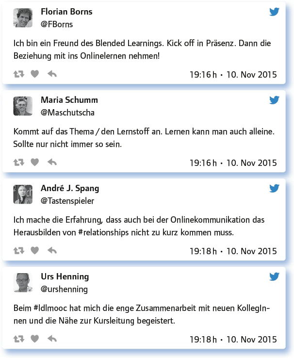
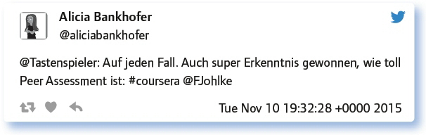
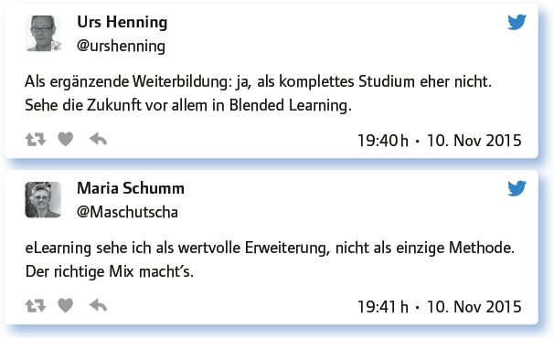
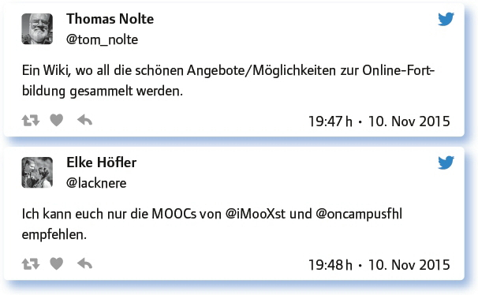

6.7
Professionelle Lehrerfortbildung online: Was gibt’s/bringt’s/ braucht’s? (#EDchatDE vom 10. November 2015)
von Monika Heusinger
Digitale Fortbildungsangebote haben den Vorteil, dass sie zeit- und ortsunabhängig wahrgenommen werden können. Im Twitterchat fand daher ein Austausch statt, welche Angebote es gibt und welche Erfahrungen damit gemacht wurden.
Schon mal bei einer Lehrerfortbildung online mitgemacht: Wie denn, wo denn, was denn?
Hier wurden einige Beispiele genannt:
MOOCs, Webinare, eLectures, auch Foren, Blogs und Twitter gehören für mich dazu.
Ich besuche regelmäßig die Webinare von @wagjuer, auch mal gerne ein Webinar von @alacre. Habe aber auch schon #MOOCs auf @coursera oder auf @FutureLearn und @iversity besucht.
Besonders viel nehme ich aber jeden Dienstag aus dem #EDchatDE mit. Jeder Tweet, jede DM, jedes Herz ist eine Fortbildung für mich.
Das virtuelle Lehrerzentrum in Hessen hat spannende Angebote: https://t.co/s7IGTxLRCh
2011: It was maybe one of the first MOOCs in Germany: https://t.co/UgdhHL67vq
Ich besuche regelmäßig die Kurse der European Schoolnet Academy @eu_schoolnet.
Meine erste prägende Erfahrung hatte ich mit der DAFWEBKON: https://t.co/Jhb-NUK1b7p
Barcamps aus der Ferne über Backchannels, Etherpads oder Periscope.
Worin liegen die Vorteile der Online-Fortbildung im Vergleich zur Offline-Fortbildung? Oder gibt es gar keine?
Die Teilgeber betonten vor allem die Vorteile von Online-Fortbildungen.
Anytime, anyplace, if you missed it – just reload it.
Vorteile: freie Zeiteinteilung, keine Anreise, mehr Input, mehr Zeit, Dinge selbst auszuprobieren.
Das orts- und zeitunabhängige Arbeiten. Inhalte und Gespräche verfliegen nicht – sie sind auch Monate/Jahre später abrufbar.
Die eigene Arbeitsumgebung. Selektiver Besuch der für mich wichtigsten Angebote. Wieder: Zeitersparnis.
Die Kollegen aus vielen Ländern, mit denen man sich austauschen kann.
No learning without relationships! Also wird bei Online-Fortbildungen nicht gelernt, so ganz ohne Face-to-Face-Diskussionen. Oder doch?
Bei Online-Fortbildungen wird ebenfalls gelernt und es lassen sich auch hier persönliche Beziehungen herstellen.

Stichwort MOOCs: Schon mal mitgemacht? Und bis zum Ende durchgehalten?
MOOCs werden insgesamt positiv beurteilt.
Ich halte meist nicht durch, schnuppere. Hole mir einzelne Badges. Mache, was mich interessiert. Das ist ein Vorteil von MOOC.
Ich war bei der Fortbildung Schule im Aufbruch auf https://t.co/QihhYOOhW3 bis zum Ende dabei. Super Erfahrung. Empfehlenswert.
@iMooXst ist klasse. Gerade bei @coursera gibt es viel zu Geschichte z. B. einen Ägypten-MOOC der @UniofManc.
Ja, z. B. GamesInSchools, euschoolnet macht das toll! https://t.co/EkfJ9iWLRg
Anbieter deutschsprachiger Online-Vorlesungen habe ich einmal hier zusammengestellt: https://t.co/h0GNKZRvv3
Antworte auf 3 Tweets unterschiedlicher Teilgeberinnen a) zustimmend, b) kritisch, c) provozierend!
Hier ein Beispiel:

Was muss eine Online-Fortbildung haben, damit sich die investierte Zeit für dich lohnt?
Inhaltliche Mehrwerte müssen für mich drin sein. Ich will was lernen, was ich noch nicht kann oder mich gezielt vernetzen.
Interessantes Thema. Hohe inhaltliche Qualität. Roter Faden und gute Programmführung. Zwischenergebnisse zum Durchhalten.
Das richtige Thema und/oder die richtigen Menschen, die mitmachen.
Sie sollte inspirieren, so dass ich direkt am nächsten Tag loslege. Passiert mir ständig.
Präzises Thema und Materialpool zum Nach-/Weiterlesen.
Relevanz, Abwechslung, gute Community.
Klare Struktur, Ziel, gute Aufbereitung, Hands On. Gilt auch für Offline Fortbildung.
Eine gute bedienbare Plattform, einen ordentlichen Schwierigkeitsgrad, mobiles Arbeiten muss möglich sein.
An derselben Sache interessierte Teilnehmer, die aus Interesse teilnehmen, nicht weil sie es müssen.
Je länger sie laufen, desto mehr Motivationales muss mit rein: #gamification, Milestones, #peer2peer.
Glaubt man dem Horizon report, sind non-formales Lernen und eLearning die Zukunft: Wie siehst du das?

Welche Anregungen, Fragen hast du sonst noch zum Thema?

Digitale Fortbildungen können Angebote sein wie MOOCs (Massive Open Online Course) oder Webinare (Online-Seminar). Man kann sich digital jedoch auch kontinuierlich fortbilden z. B. durch Abonnieren von Blogs oder Vernetzung über Social Media wie Twitter. Wichtig war den Teilnehmern am #EDchatDE, dass ein Lernzuwachs erfolgt. Digitale Fortbildungsangebote haben jedoch den Vorteil, dass man jederzeit abbrechen kann, was in einer Präsenzveranstaltung eher als unangenehm empfunden wird. Darüber hinaus kann man wählen, welche Aspekte für die eigene Fortbildung interessant sind und muss nicht linear vorgehen. Des Weiteren stehen die Informationen jederzeit zur Verfügung und können unbegrenzt oft abgerufen werden. Auch die Zeit für Übungsphasen kann individuell gestaltet werden. Da bei den meisten Angeboten Interaktion möglich ist, dadurch sogar neue persönliche Kontakte entstehen können, wird der rein digitale Austausch nicht als problematisch gesehen. Allerdings sehen die Teilnehmer diese Angebote eher als Ergänzung. Es sollte vielmehr eine Mischung sein aus persönlichen Treffen im Real Life und dem orts- und zeitungebundenen digitalen Zusammenarbeiten.
Digitale Angebote:
André Spang: https://wiki.andrespang.de/index.php?title=EdchatDE
Freie Universität Berlin: https://blogs.fu-berlin.de/icmchatde/
iversity: https://iversity.org/de/courses
LPM Saarland: http://www.lpm.uni-sb.de/typo3/index.php?id=1258
Link zum vollständigen Protokoll: